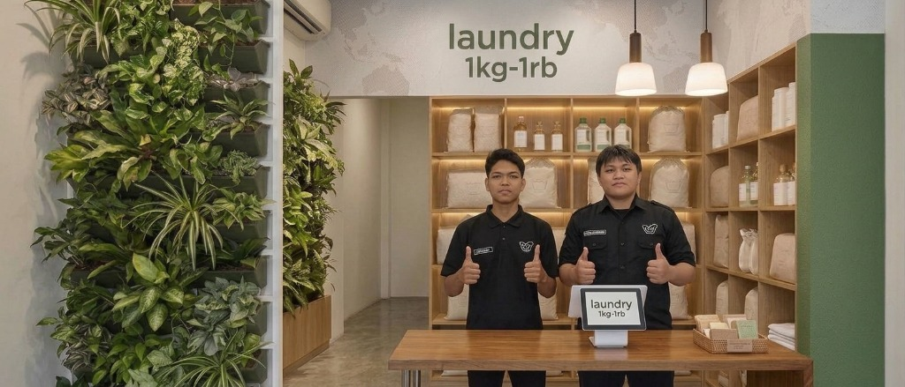

1 Mesin 1 Pelanggan
Pakaian Anda dijamin tidak dicampur dengan pakaian orang lain agar selalu higienis dan tidak tertukar.
Jasa laundry kiloan & satuan profesional di Jogja. Bersih, wangi, 1 mesin 1 pelanggan, dan siap GRATIS antar-jemput ke kos, rumah, atau hotel Anda.
Pesan Antar Jemput
Pakaian Anda dijamin tidak dicampur dengan pakaian orang lain agar selalu higienis dan tidak tertukar.
Fasilitas kurir siap jemput dan antar cucian langsung ke kos, kontrakan, maupun hotel di area yang terjangkau.
Menggunakan deterjen ramah serat kain, pewangi tahan lama, serta plastik wrap tebal berkualitas.
Butuh pakaian cepat untuk acara kampus atau dinas? Tersedia pilihan kilat express selesai 3 - 6 jam.
Isi formulir online di web ini dengan alamat kos/rumah dan nomor WhatsApp aktif Anda.
Kurir kami akan menghubungi via WA dan langsung mengambil pakaian kotor ke lokasi Anda.
Setelah ditimbang dan diproses, pakaian bersih dan rapi diantar kembali ke tempat Anda.
Minimal pemesanan untuk layanan antar jemput gratis adalah 5 kg untuk area seputaran kampus dan kota Yogyakarta.
Tentu tidak. Kami menerapkan standar ketat 1 mesin cuci hanya untuk 1 pelanggan saja demi kebersihan dan keamanan pakaian.
Pembayaran sangat fleksibel, bisa dilakukan secara tunai (cash) saat pakaian diantar atau transfer melalui QRIS/Mobile Banking.